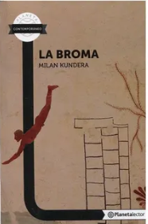
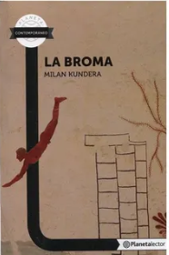

Historia breve del autor
Milan Kundera (1929-2023) fue un destacado escritor, novelista y ensayista checo-francés. Estudió literatura y cine en la Academia de Música y Artes Dramáticas de Praga, pero su carrera literaria se desarrolló principalmente en el exilio en Francia.
Es conocido por su estilo único que mezcla narrativa, filosofía y ensayo. Su obra más famosa, "La insoportable levedad del ser" (1984), es un profundo análisis de la condición humana.
 
